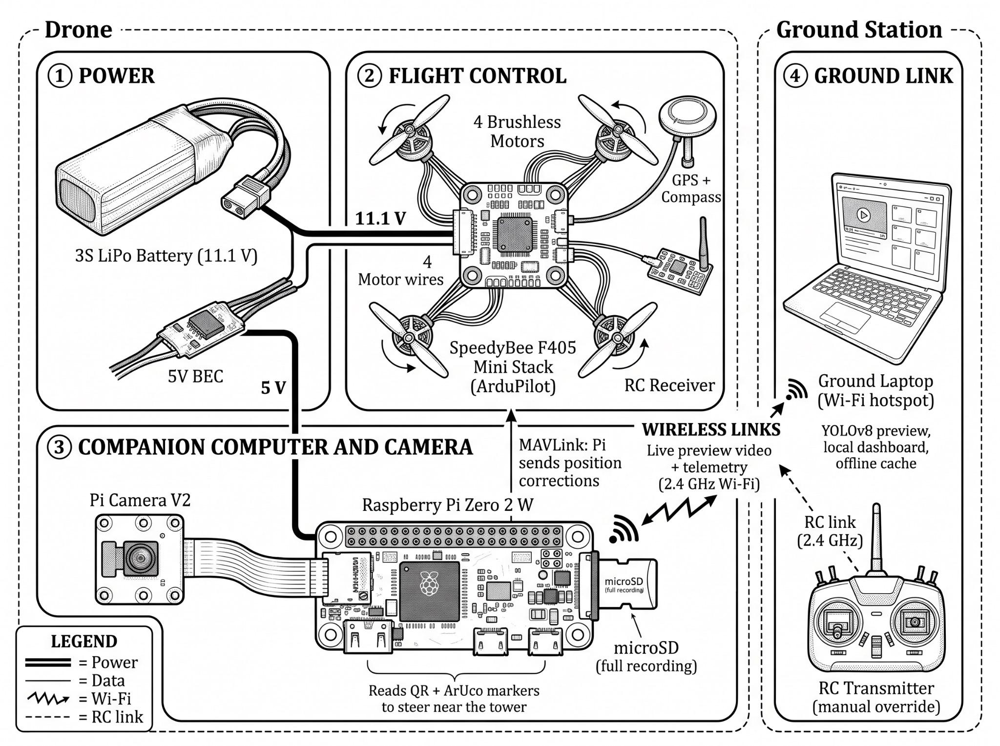

Figure 7 · Technical Design~200–240gEstimated takeoff weight
3S650 mAhLiPo, 3 batteries
3–5minPer battery, one tower
1
Power
LiPo feeds the flight stack; a separate 5 V BEC feeds the Pi so motor surges can't restart it
2
Flight control
SpeedyBee F405 Mini on ArduPilot, 4-in-1 ESC, Quad-X; GPS + compass; ELRS receiver
3
Companion + camera
Pi Zero 2 W talks MAVLink over serial; Pi Camera V2 records 1080p to microSD
4
Ground link
2.4 GHz Wi-Fi to the laptop hotspot; travel router only if range is short
Checked on the bench before flying
- Weigh the assembled drone
- Thrust test: over ~half throttle to hover → 1404 motors
- AutoTune and checkerboard camera calibration
- Marker detection ~10 fps without throttling